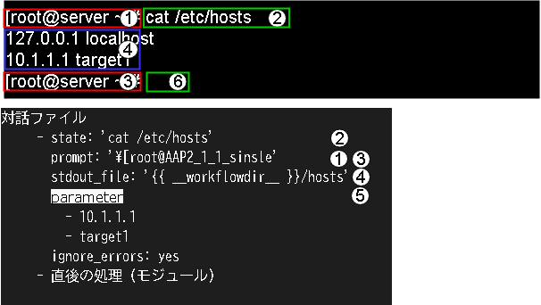

Manages Interactive types that compiles interactive files for the same goal.
3
OS type
Manages the OS type of the target device.
4
Interactive file colletion
Manage the OS type linked with the Interactive type and the ITA system original format work procedure file (hereinafter refered to as Interactive files.).
5
Movement-Interactive type link
Manages links between Movements and Interactive types for the Interactive file.
6
Substitute value auto registration settings
Manages movements and variables that link items and values for each operation registered in the parameter sheet menu.
7
Execute
Executes selected Movements and Operations.
8
Execution management
Managed execution history.
9
Check operation status
Displays the status of executions.
10
Target host
Manages target hosts.
11
Substitute value management
Manages variable substitute values.
12
Movement-variable link (※1)
Manages links between Movements and variables.
Tip
※1 Hidden menus are internal functions used to register and edit data.
There are some hidden menus configured when the Ansible-Legacy driver function is installed.
In order to display hidden menus, go to the Management console▶Role/Menu link management menu and restore the desired menus. For more information, see Management console.
Make sure to not register any data to these menus.
From the Ansible common ▶ Interface information menu, select Ansible Core, Ansible Automation Controller or Ansible Execution Agent for the execution engine and register connection information for the execution engine server
From the Ansible common ▶ Execution environment definition template management menu, Register the template file for the Execution environment definition file (execution-environment.yml) which is used to build the Execution environment by the ansible-builder within the Ansible Execution Agent.
Register Parameters that will be embedded to the execution environment definition file (execution-environment.yml) template file registered in Ansible common ▶ Execution environment definition template management.
Installing ITA registers , the "Execution environment parameter definition" parameter sheet with the parameters that embeds to the execution environment definition template file (execution-environment.yml) file is registered.
Register a link between the "Execution environment parameter definition" parameter sheet and the template file for the execution environment definition file (execution-environment.yml) registered in Ansible common ▶ Execution environment definition template management
Installing ITA registers a link between the "Execution environment parameter definition" parameter sheet and Ansible common ▶ Execution environment definition template management.
Register Movement
From the Ansible-Pioneer ▶ Movement list menu, register a Movement.
From the Ansible common ▶ Unmanaged target variable list menu, register extracted variables which will not be displayed in Ansible-Legacy ▶ Substitute value auto registration's Movement name:Variable name.
From the Create/Define parameter sheets menu, create a Parameter sheet which will have data registered to it that can configure settings for the target.
From the Ansible-Pioneer ▶ Substitute value auto registration settings menu, link the Movement variables with the Parameter sheet's item's setting values.
From the Ansible-Pioneer ▶ Confirm execution status menu,the status of all previously executed operations will be updated in realtime. Users can also monitor error logs and execution logs as well as stop them with an emergency stop.
In Ansible-Pioneer, define differences per OS type in Interactive files, and dialogue files with the same purpose are grouped together as 'Interactive type' to absorb (extract) differences.
The items found in the registration page are as following.
警告
When variables defined within Interactive files are extracted
The variables defined within Interactive files are extracted by internal processes.The variables can have specific values registered to them in Substitute value auto registration settings
Links (view/register/edit/discard) parameter item setting values and Movement variables.
|The registered information is displayed in Ansible-Pioneer ▶ Substitute value management and Ansible-Pioneer ▶ Target host when executed by internal processes.
図 3.43 Registration page (Substitute value auto registration settings)¶
The items found in the registration page are as following.
Tip
※1:Only required if the Parammeter sheet has Bundles active.
In order to link Movement variables with Parameter sheets with bundles, the user must input a substitute order for the Parameter sheet (From) in Ansible-Pioneer ▶ Substitute value auto registration settings.
See the following figure for more information regarding the relationship between bundled parameter sheets and Substitute value auto registration settings.
Tip
※2 Input Substitute order
In Ansible-Legacy, if no Substitute order is input, the variables will be handled as normal variables.
If Substitute order has been input, they will be handled as multiple specific value variables. Even If the Multiple Specific Value Variable doesnt need multiple specific values,
(Specific value can be 1 or more), make sure to input a substitute order.
Substitute orders does not need to succeed particular Multiple specific value variables.
e.g.) Input Substitute order for multiple specific value variables and executing.
In :menuselection:`Ansible-Pioneer --> Substitute value auto registration settings`s link Role variables and th setting values for items registered to the Parameter sheets.
表 3.30 Substitute value auto registration settings registration contents¶
Menu name
Item
Variable name
Substitute order
sample-menu
Item1
VAR_substitutionA
30
sample-menu
Item2
VAR_substitutionA
10
sample-menu
Item3
VAR_substitutionA
20
sample-menu
Item1
VAR_substitutionB
2
sample-menu
Item2
VAR_substitutionB
4
sample-menu
Item3
VAR_substitutionB
1
sample-menu
Item4
VAR_substitutionB
3
When executed, the host variable file (host_vars/test-host) will have the variables registered in Substitute value auto registration settings output similarly to the example below.
Only variables registered in the Substitute value auto registration settings menu are output to the Host variable file when executed.
The same goes for multistage variables. Only member variables with specific values registered will be output.
Tip
Examples using Playbook variables linked to File embedded variables and Template embedded variables
e.g.) If the File embedded variable, CPF_test, and Template embedded variable, TPF_sample, is linked to the Playbook variable in the Substitute value auto registration settings menu.
Register the following in:menuselection:Ansible common --> File management / Ansible common ▶ Template management.
In Ansible-Pioneer ▶ Substitute value auto registration settings, link the Playbook variable and the Item setting value of the Parameter sheet registered in Step 2. and Execute Ansible in Ansible-Legacy ▶ Execute.
表 3.32 Substitute value auto registration settings registration contents¶
Menu name
Item
Variable name
Sample parameter sheet
File management
VAR_filetest
Sample parameter sheet
Template management
VAR_temptest
Click the Ansible-Pioneer ▶ Confirm execution status's Check substitute value button to check that the '{{ CPF_test }}' and '{{ TPF_sample }}' are dispalyed to the Specific value.
図 3.45 Confirm execution status Substitute value management¶
There are 3 different types of execution types. Clicking the one of the execution buttons moves the user to Ansible-LegacyRole ▶ Confirm execution status where the execution process will start
See the following for information regarding the different execution types.
Execute
Press the Execute button to run operations to the execution target.
Dry run
Clicking the Dry run button allows the user to perform a dry run where the operation is not executed to the execution target.
Dry runs will execute the Ansible-Playbook command's --check parameter.
Check Parameter
Clicking the Check Parameter button allows users to check that the information registered in Ansible-Pioneer ▶ Substitute value auto registration settings and the Operation and Movement link information is displayed to Ansible-Legacy ▶ Substitute value management and Ansible-Legacy ▶ Target host without actually executing to the execution target.
Tip
Specify reservation date
Inputing a Reservation date allows users to reserve executions.
Reservation dates can only contain a date/time later than the current date/time.
The status matching the Execution status is displayed.
The execution log and error log also displays detailed information regarding the execution status.
If the execute type is "Execute", "Normal" will be displayed. If Dry run is selected, "Dry run". If Parameter check is selected, "Parameter check" will be displayed.
If the status ends in an unexpected error, a message will be displayed in the error log.
"Call Conductor" displays which Conductor was executed. This field will be blank if directly executed from Ansible-LegacyRole.
Confirm Target host
Clicking the Check Target host button displays Ansible-LegacyRole ▶ Target host where hosts from Operations and Movements are displayed.
Confirm Substitute value
Clicking the Check Sbstitute value button displays Ansible-LegacyRole ▶ Substitute value management where users can see Specific values and Variables from Operations and Movements.
Emergency stop/Delete reservation
Users can press the Emergency stop button to stop the operation.
If the status was "Reserved execution", the Delete reservation button will be displayed. Check the Delete reservation button to delete the reservation
Display execution log
When Ansible Automation Controller is executed, the Playbook is executed in units of the device to be built grouped by the item values of Ansible common ▶ Device list's User ・ Password ・ssh secret key file ・ Passphrase ・ Connection type ・ Instance group, which splits the execution logs.
By specifying the number of job slices in the Option parameter in Ansible common ▶ Interface information or Ansible-Pioneer ▶ Movement list, the grouped targets can be further divided into the number of specified job slices before the Playbook is executed and the execution log is further divided.
If the execution log has been divided, the execution log will be divided into tabs, where the user can select which execution log they want to see.
The log file names displayed in the execution log's pulldown menu are as following.
exec.log: Log file containing all execution logs.
Not exec.log: Divided execution log. The file convention are as following.
The Execution target's serial number grouped by the Ansible common ▶ Device list's User ・ Password ・ ssh secret key file ・ Passphrase ・ Connection type ・ Instance group items.
Serial number
Serial number from 1 that divides the group by setting the number of job slices.
If 0, no division of job slicing was done.
Search log
Users can filter information to narrow down information in the execution log and the error log.
Input the string the user wants to search for and tick the "Corresponding lines only" checkbox to view only the lines corresponding to the string.
The refresh interval and maximum display lines can be configured by changing the "Status monitoring cycle item" and "Progress status display lines" items in Ansible common ▶ Interface information.
Specify search conditions and press the Filter button to view a table of executions.
Pressing the Details button moves the user to Ansible-Pioneer ▶ Confirm execution status where they can view detailed information regarding the execution status.
表 3.36 View page item list (Substitute value management)¶
Item
Description
Item number
Displays an automatically given unique ID (36 characters).
Execution number
Displays the Execution number when executed.
Operation
Displays the selected Operation.
Movement name
Displays the selected Movement.
Host name
Displays the selected Target host.
Movement name:Variable name
Displays the Variable name when executed
Specific
value
String
Sensitive settings
Displays either "True" or "False".
Value
Displays the Variable's Specific value when executed.
If the Sensitive settings are set to "True"
The Specific value input to the Parameter sheet will be encrypted and not be viewable on ITA.
The variable's Specific value has its encrypted contents configured by ansible-vault.
If the Sensitive settings are set to "False"
The Specific value input to the Parameter sheets will be displayed.
File
Displays the File name linked to the Variables.
Substitute order
If the variable is a Multiple Specific Value Variable, the Substitute order will be displayed.
Input commands after waiting for the command prompt from the target host.
state
Input the command to target host. The contents of the standard output until the prompt is output to the standard output are analyzed by external shell, and the result is determined.
command
Loops and conditional branching can be performed before and after inputting commands to the target host.
localaction
Input command in the environment Ansible Core/Ansible Automation Controller/Ansible execution agent is executed.
After submitting commands to the working host and waiting for the command prompt, the contents of the standard output are analysed by an external Shell to determine the results.
The overview figure for the state module are as following.

①Wait for the output of the expected string (prompt) form the contents that the target host outputs for the standard input.
②Input command specified by state.
③Wait for command prompt specified by the expect from the standard output of the command input in②.
④Save standard output contents to the file specified by stdout_file.
⑤grep the contents of the stdout_file with the word(s) specified with parameter.
⑥Inputs return so the command prompt can wait for new commands after the process.
# cat the hosts file and grep the displayed results with parameter value.# If there is line containing 127.0.0.1 or lalhost, the result is determined as normal and proceed to the next.# If there is no such line, the result is determined as abnormal and the interactive file is terminated abnormally.exec_list:-state:'cat/etc/hosts'prompt:'{{__loginuser__}}@{{__inventory_hostname__}}'parameter:-'127.0.0.1'-'localhost'-expect:'{{__loginuser__}}@{{__inventory_hostname__}}'exec:exit
e.g.）Using success_exit
# cat the hosts file and grep the displayed results with parameter value.# If there is line containing 127.0.0.1 or lalhost, the result is determined as normal and proceed to the next.# 対象If there is no such line, the result is determined as abnormal and the interactive file is terminated abnormally.exec_list:-state:'cat/etc/hosts'prompt:'{{__loginuser__}}@{{__inventory_hostname__}}'parameter:-'127.0.0.1'-'localhost'success_exit:yes-expect:'{{__loginuser__}}@{{__inventory_hostname__}}'exec:exit
e.g.）Using ignore_errors
# cat the hosts file and grep the displayed results with parameter value.# If there is line containing 127.0.0.1 or lalhost, the result is determined as normal and proceed to the next.# If there is no such line, the result is determined as abnormal and proceed to the next according to the ignore_errors:yes settings.exec_list:-state:'cat/etc/hosts'prompt:'{{__loginuser__}}@{{__inventory_hostname__}}'parameter:-'127.0.0.1'-'localhost'ignore_errors:yes-expect:'{{__loginuser__}}@{{__inventory_hostname__}}'exec:exit
e.g.）Using shell
# cat the hosts file and evaluate the contents output by the user created shell.# Parameter value is given using user created shell parameter.# If a user created shell ends in an error, the interactive file will end.exec_list:-state:'cat/etc/hosts'prompt:'{{__loginuser__}}@{{__inventory_hostname__}}'shell:'/tmp/grep.sh'stdout_file:'/tmp/stdout.txt'parameter:-'127.0.0.1'-'localhost'-expect:'{{__loginuser__}}@{{__inventory_hostname__}}'exec:exit
e.g.）Save target host file to "Result data" with state.
# cat the hosts file and save the displayed result to the file specified by stdout_file then proceed to the next.# Will end in error if the default shell parameter is not configured. Set ignore_errors: yes in order to move to the next process.exec_list:-state:'cat/etc/hosts'prompt:'{{__loginuser__}}@{{__inventory_hostname__}}'stdout_file:'{{__workflowdir__}}/hosts'ignore_errors:yes-expect:'{{__loginuser__}}@{{__inventory_hostname__}}'exec:exit
VAR_status_list:-start-startVAR_service_list:-httpd-mysql# there are 2 specific values used by command.# The required amount of specific values for the variables using prompt and timeout is 3.VAR_prompt_list:-Command prompt-Command prompt-Command promptVAR_timeout_list:-10-10-10
e.g.） Example using when
conf:timeout:30exec_list:-expect:'password:'exec:'{{__loginpassword__}}'# If the ITA variable, VAR_hosts_make, is written in host variable file（The parameter sheet items and variables are linked in Susbtitute value auto registration), cat the host file.# If the variable are not written, the command is skipped.-command:cat /etc/hostsprompt:'{{__loginuser__}}@{{__inventory_hostname__}}'when:-VAR_hosts_make is define-expect:'{{__loginuser__}}@{{__inventory_hostname__}}'exec:exit
e.g.） Example using exec_when and register
conf:timeout:30exec_list:-expect:'password:'exec:'{{__loginpassword__}}'# If the ITA variable, VAR_hosts_make, is written in host variable file, cat the host file.# If the variable are not written, the command is skipped.# Use cat to save the contents of the standard output hosts file to result_stdout.-command:cat /etc/hostsprompt:'{{__loginuser__}}@{{__inventory_hostname__}}'register:result_stdoutwhen:-VAR_hosts_make is define# If the ITA variable, VAR_hosts_make, is written in host variable file, cat the host file.# Input commad. If the variable are not written, the command is skipped.# Execute the command for the numbers of the specific values of the multiple specific value variables set in the with_items.# From the result of condition judgment for each loop, if "ip address host name" does not# correspond to the hosts file, Input command. "IP address Host name" is added to the end of the hosts file.。-command:'echo{{item.0}}{{item.1}}>>/etc/hosts'prompt:'{{__loginuser__}}@{{__inventory_hostname__}}'when:-VAR_hosts_make is definewith_items:-'{{VAR_hosts_ip}}'# item.0-'{{VAR_hosts_name}}'# item.1exec_when:-result_stdout no match({{ item.0 }} *{{ item.1 }})-expect:'{{__loginuser__}}@{{__inventory_hostname__}}'exec:exit
e.g.）Example using failed_when
conf:timeout:30exec_list:-expect:'password:'exec:'{{__loginpassword__}}'# Execute the command for the numbers of the specific values of the multiple specific value variables set in the with_items.# Configure auto startup for the service.-command:'systemctlenable{{item.0}}'prompt:'{{__loginuser__}}@{{__inventory_hostname__}}'with_items:-'{{VAR_service_name_list}}'# item.0# Execute the command for the numbers of the specific values of the multiple specific value variables set in the with_items.# Start the service.-command:'systemctlstart{{item.0}}'prompt:'{{__loginuser__}}@{{__inventory_hostname__}}'with_items:-'{{VAR_service_name_list}}'# item.0# Execute the command for the numbers of the specific values of the multiple specific value variables set in the with_items.# outputs service status (stdout)# If the content of result output to standard output contains the regular expression of item.1, the result is right.# For example, in the case that the specific value of VAR_service_status_list is set to running and the service is running, "running" in "Active: active(running)" matches so the result is right. (Move on to the next loop)# In the case that condition doesn't match, the result is determined as abnormal and the dialog file terminates abnormally.-command:'systemctlstatus{{item.0}}'prompt:'{{__loginuser__}}@{{__inventory_hostname__}}'with_items:-'{{VAR_service_name_list}}'# item.0-'{{VAR_service_status_list}}'# item.1failed_when:-stdout match({{ item.1 }})-expect:'{{__loginuser__}}@{{__inventory_hostname__}}'exec:exit
e.g.） Example using when with or/and condition
conf:timeout:30exec_list:-expect:'password:'exec:'{{__loginpassword__}}'# Example of compound condition using and / or.# When processing with or condition, write the if statement horizontally.# When processing with and condition, describing the statement in multiple lines.# "when" is used as the example here but the same applies to exec_when and failed_when.-command:systemctl stop my_serviceprompt:'{{__loginuser__}}@{{__inventory_hostname__}}'when:-'{{VAR_status}}==10OR{{VAR_status}}==11'-'{{VAR_sub_status}}==20OR{{VAR_sub_status}}==21'-expect:'{{__loginuser__}}@{{__inventory_hostname__}}'exec:exit
The following contains localaction module input examples.
e.g.）localactionのInput examples
exec_list:-expect:'password:'exec:'{{__loginpassword__}}'# Create a directory to output the hosts file for every host in the shared directory ({{ __symphony_workflowdir__ }}) of each Movement.-localaction:mkdir -p 0755 {{ __workflowdir__ }}/{{ __inventory_hostname__ }}ignore_errors:yes# Output hosts file contents to the directory created with localaction.-state:cat /etc/hostsprompt:'{{__loginuser__}}@{{__inventory_hostname__}}'stdout_file:'{{__workflowdir__}}/{{__inventory_hostname__}}/hosts'ignore_errors:yes-expect:'{{__loginuser__}}@{{__inventory_hostname__}}'exec:exit
Not processed with command and state modules, Create interactive files with expect module.
e.g.）Interactive command "ssh-keygen" process example
# Process ssh-keygen in a dialogue fileconf:timeout:10exec_list:# ssh connection Password authentication-expect:'assword:'exec:'{{__loginpassword__}}'# Execute ssh-keygen command-expect:'{{__loginuser__}}@{{__loginhostname__}}'exec:ssh-keygen# The following is the process for prompts other than the command prompt.# Set file path of the secret key# Since expect is evaluated in regular notation, the escape character (\) must be inserted for characters that needs escape-expect:'id_rsa\):'exec:'{{VAR_id_rsa_path}}'# Configure Passprhase-expect:'passphrase\):'exec:'{{VAR_passphrase}}'# Configure Passprhase-expect:'passphraseagain:'exec:'{{VAR_passphrase}}'# Check generated secret key file-expect:'{{__loginuser__}}@{{__loginhostname__}}'exec:'ls-al{{VAR_id_rsa_path}}'# Close ssh connection-expect:'{{__loginuser__}}@{{__loginhostname__}}'exec:exit
The parameters that allows for multiple specific value variables in interactive files is the command module with the with_items parameter only. Using any other command and parameter will cause an error when executed.
Make sure to input a command that ends the session at the end of the dialogue file.
Ending the last line of the module closes the session.
If the final line is a file copy or any other process that takes time, the session will close before the command is finished and may end up ending abnormaly.
e.g.）Putting "exit" command for ending the session at the end of the interactive file.
conf:timeout:10exec_list:# ssh connection Password authentication-expect:'assword:'exec:'{{__loginpassword__}}'# Copy file-expect:'{{__loginuser__}}@{{__loginhostname__}}'exec:'cp-rfp{{VAR_src_path}}{{VAR_dest_path}}'# Write a line that waits for the previous command to end in the command prompt and inputs an exit command at the end of the Interactive file.-expect:'{{__loginuser__}}@{{__loginhostname__}}'exec:exit
Interactive files are treated as yaml format files. Interactive modules that doesnt follow YAML formats will cause an registration error. The following will cause errors:
When the Module parameters are not enclosed in quotation marks when inputting variables into them.
When each parameter is described by a constant only and the entire parameter is not enclosed in quotation marks, e.g. when the constant ends in ":".
The module parameters must have their parameters enclosed in quotations.
The Login user's "LANG" supports the 3 types of UTF-8/euc/shift_jis.
The Login user's "LANG" settings must be configured from Ansible common ▶ Device list's LANG item.
If "euc" or "shift_jis" is used, the interactive file may not be processed correctly due to the characteristics of the decoding process to UTF-8 of the pexpect module used in the communication control with the device.
Some full-width characters( such as "①②" cannot be used with the UTF-8 decoder. Characters that are not decodable will be displayed as "??".
When some full-width characters ( such as " -, etc") are used in prompt waiting, The waiting will end successfuly if the LANG is "UTF-8". If it is "euc/shift_jis" the wait will time out.
Termination codes for commands input to the target device¶
The termination code for the code executed to the target host sends "LF". If the termination code is "CRLF", add "r" to the end of the command.
Depending on the working target, an Operating System Command sequence may be appended immediately before the command prompt sent by the working target. ITA eliminates the escape sequence immediately preceding the string specified in the prompt parameter.
3.7.1. Link between ITA menus and Input data when executing Ansible¶
Information from the different ITA menus are extracted in order to create input data required to execute Ansible. When this happens, Password items in the Ansible common ▶ Device list menu and items with their Sensitive settings set to "True" in the Ansible-Pioneer ▶ Substitute value management menu.
The Input data can be downloaded from the Ansible-Pioneer ▶ Confirm execution status menu's Input data.
Useres can also directly execute Ansible by unzipping the downloaded input data in a specified directory.
The relationships between the different data and ITA menus are as following.
3.7.2. Result data created when executing Ansible¶
The results from executing "Input data" with Ansible are saved as "Result data" in a ZIP file.
"Result data" can be downloaded from Ansible-Pioneer ▶ Confirm execution status menu's Result data in a ZIP file.

{kind=link}
{kind=link}
{kind=link}
{kind=link}
{kind=link}
{kind=link}
{kind=link}
{kind=link}
{kind=link}
{kind=link}
{kind=link}
{kind=link}


{kind=link}
{kind=link}
{kind=link}

{kind=link}
{kind=link}